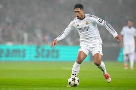
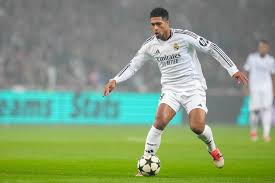

Top Players
Vinicius Jr.
Vinícius Júnior, full name Vinícius José Paixão de Oliveira Júnior, is a Brazilian professional footballer who plays as a winger for Real Madrid and the Brazilian national team. Born on July 12, 2000, in São Gonçalo, Brazil, he is known for his explosive pace, dribbling skills, and ability to score goals.
Vinícius Jr. began his professional career at Flamengo, where his talent quickly caught the attention of European clubs. In 2018, he transferred to Real Madrid for a reported fee of around €45 million, making him one of the most expensive teenage signings in history at the time.
Since joining Real Madrid, Vinícius has developed into one of the club’s key players, known for his dazzling dribbling and crucial goals. He played a vital role in the team’s success in the 2021-2022 UEFA Champions League, scoring important goals, including the decisive goal in the final against Liverpool.
With Brazil, Vinícius has been part of the national team setup, contributing to various international competitions. He is regarded as one of the brightest young talents in world football.

Kyllian Mbappe
Kylian Mbappé is a French professional footballer widely regarded as one of the brightest talents in the sport. Born on December 20, 1998, in Bondy, France, he quickly rose to prominence with his remarkable speed, skill, and goal-scoring ability. Mbappé began his career at AS Monaco, where his dazzling performances helped the team win Ligue 1 in the 2016-2017 season, catching the attention of top European clubs.
In 2017, he joined Paris Saint-Germain (PSG), where he continued to excel, winning multiple Ligue 1 titles and domestic trophies, becoming one of the most valuable players in world football. Known for his blistering pace, technical dribbling, and sharp finishing, Mbappé has established himself as one of the best forwards of his generation.
On the international stage, Mbappé made history as a key player in France’s 2018 FIFA World Cup victory, scoring in the final and becoming the second teenager ever to score in a World Cup final, after Pelé. His contributions to France's success have cemented his legacy as a player who thrives in high-pressure situations.


Jude Bellingham
Jude Bellingham is an English professional footballer known for his exceptional skill, versatility, and maturity on the field despite his young age. Born on June 29, 2003, in Stourbridge, England, he plays primarily as a central midfielder but can also operate as an attacking midfielder or even deeper in a defensive role when needed
Bellingham's footballing journey began at Birmingham City, where he made an immediate impact as one of the club's youngest ever first-team players. His performances quickly earned him a move to Borussia Dortmund in 2020, where he further developed his game and gained international recognition. His composure, vision, passing range, and ability to read the game have made him one of the most highly regarded young talents in world football.
In 2023, Bellingham made a high-profile transfer to Real Madrid, where his skills flourished, helping him establish himself as a key figure in their midfield. Known for his intelligence, technical ability, and leadership, Bellingham's playing style is characterized by his dynamic runs, excellent ball control, and a keen eye for goal. Off the ball, he is tenacious and quick to recover possession, often initiating counterattacks with his well-timed tackles and interceptions.

 
